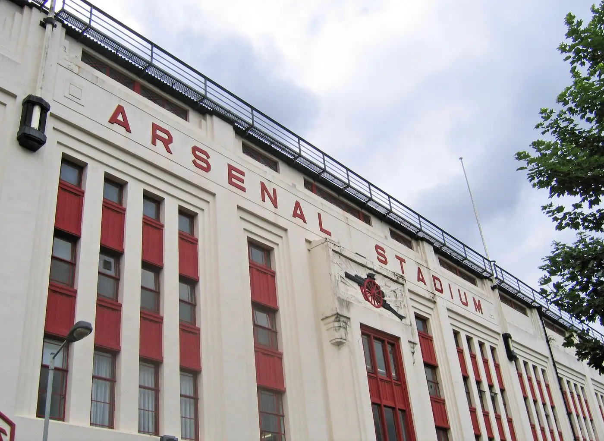
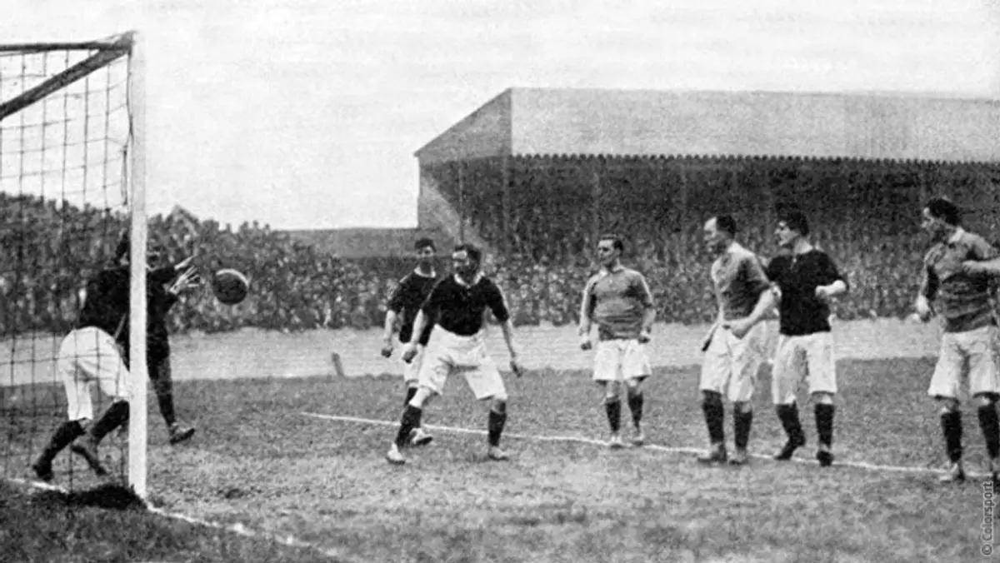
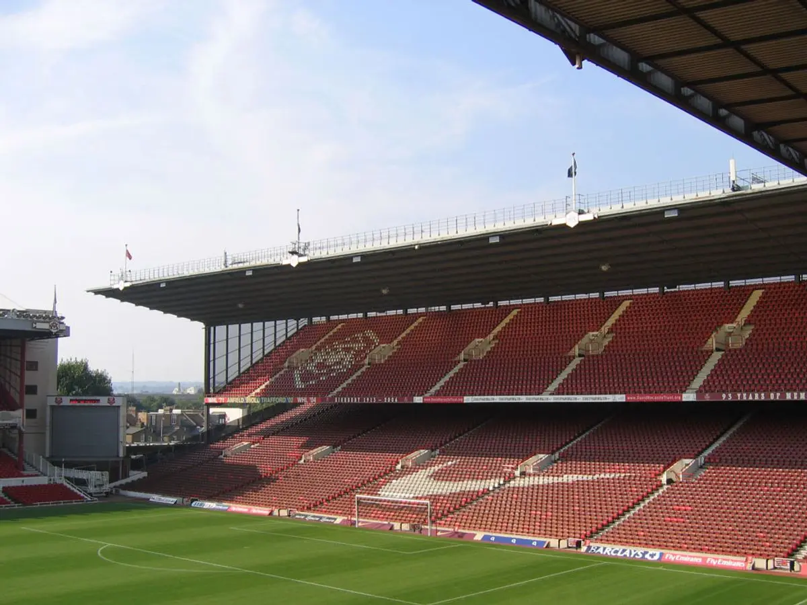
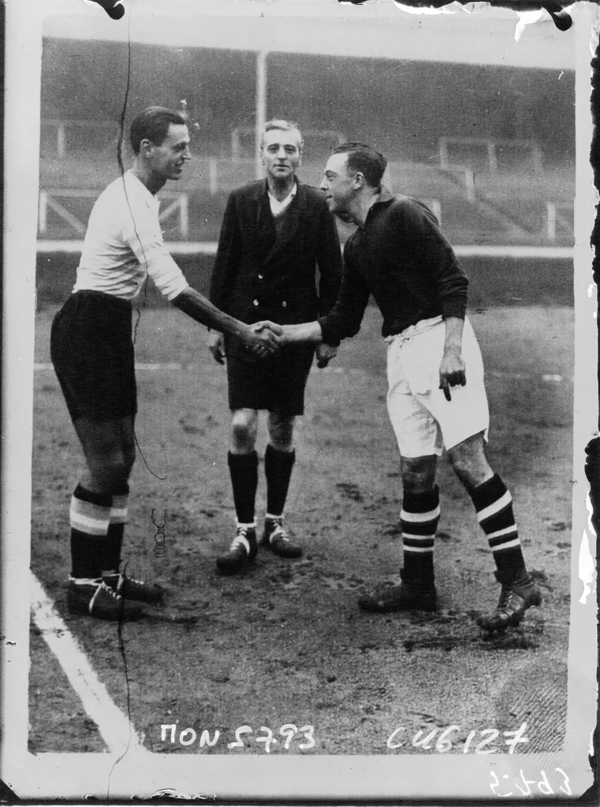
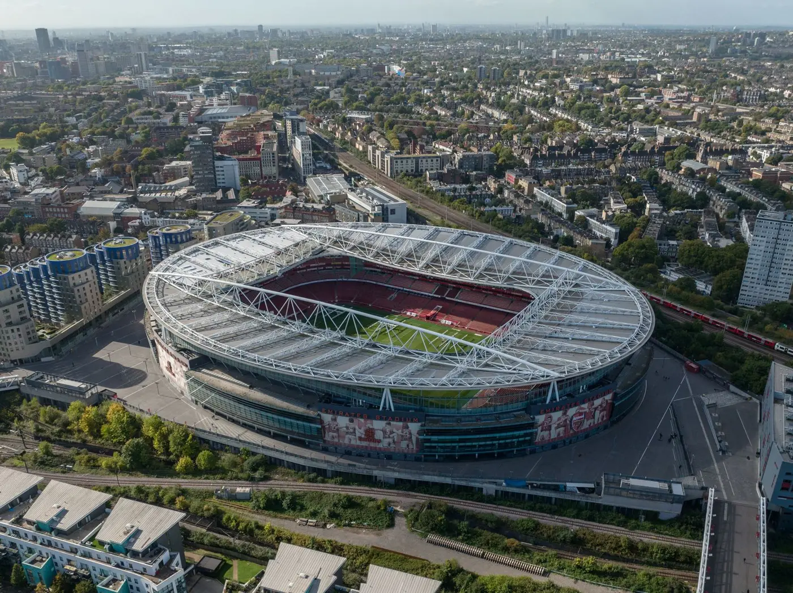
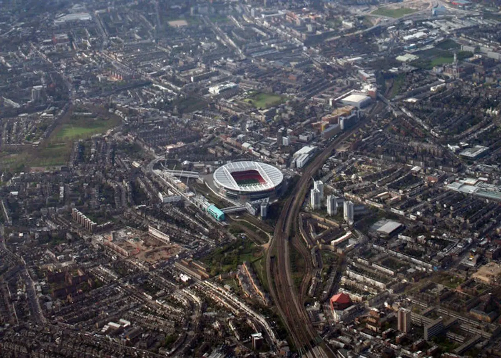
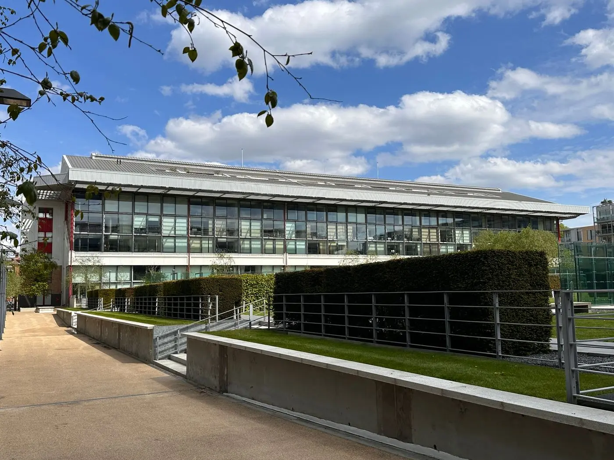

Stadion
Tiga rumah, satu identitas.
Perjalanan Arsenal juga perjalanan kandangnya: dari lapangan terbuka di Plumstead, Highbury yang legendaris, hingga Emirates Stadium yang dibangun hanya sekitar 500 meter dari rumah lamanya.

Lama · Highbury Baru · Emirates
Baru · Emirates
Sebelum 1913
Kandang-kandang awal di Plumstead
Di Woolwich, klub beberapa kali berpindah lapangan karena masalah sewa dan kondisi tanah. Manor Ground menjadi rumah paling lama sebelum Henry Norris memutuskan pindah ke utara demi penonton yang lebih banyak.

- 1886–1887Plumstead CommonLapangan terbuka umum di dekat Woolwich.
- 1887–1888Sportsman GroundBekas lapangan di Plumstead Marshes yang sering tergenang.
- 1888–1890Manor GroundKandang pertama yang lebih tertata.
- 1890–1893Invicta GroundMemiliki tribun dan teras, tetapi sewanya mahal.
- 1893–1913Manor GroundKembali dan dibeli klub saat masuk Football League.
- 1913–2006HighburyRumah selama 93 tahun di London utara.
- 2006–kiniEmirates StadiumStadion modern berkapasitas 60.704 kursi.
1913 — 2006
Highbury, "Home of Football"
Highbury dirancang oleh arsitek stadion Archibald Leitch dan dibuka 6 September 1913 meski belum selesai, dengan kemenangan 2–1 atas Leicester Fosse. Pada 1930-an, saat Arsenal sedang berjaya, klub membangun West Stand (1932) dan East Stand (1936) bergaya art deco — East Stand kini menjadi bangunan cagar budaya.
Rekor penonton tercatat 73.295 orang saat melawan Sunderland pada 9 Maret 1935. Setelah Laporan Taylor mewajibkan stadion serba-kursi, kapasitasnya turun menjadi 38.419. Karena dikelilingi permukiman dan status cagar budaya, Highbury sulit diperluas — alasan utama Arsenal pindah.
Laga terakhir dimainkan 7 Mei 2006: Arsenal menang 4–2 atas Wigan lewat hat-trick Thierry Henry.



2006 — sekarang
Emirates Stadium
Rencana pindah dimulai pada 1999 dengan lahan industri di Ashburton Grove. Setelah pendanaan terkunci, pembangunan dimulai Februari 2004 oleh kontraktor Sir Robert McAlpine dengan desain dari HOK Sport (kini Populous). Biayanya sekitar £390 juta — utang yang membuat Arsenal harus berhemat di bursa transfer selama bertahun-tahun.
Stadion dibuka 22 Juli 2006 dengan laga testimonial Dennis Bergkamp melawan Ajax, dan diresmikan Pangeran Philip pada 26 Oktober 2006. Kapasitasnya kini 60.704 kursi. Sejak 2009, klub menambahkan mural para legenda, patung, dan nama-nama tribun lama agar stadion terasa seperti rumah — proses yang dikenal sebagai "Arsenalisation".
Pada 2026, Emirates genap berusia 20 tahun, dan jersey kandang 2026/27 dirancang untuk merayakannya.
Perbandingan
Highbury vs Emirates
| Highbury | Emirates | |
|---|---|---|
| Dibuka | 6 September 1913 | 22 Juli 2006 |
| Laga pertama | vs Leicester Fosse (2–1) | vs Ajax — laga testimonial Bergkamp |
| Kapasitas | 38.419 kursi (saat ditutup) | 60.704 kursi |
| Rekor penonton | 73.295 (vs Sunderland, 1935) | 60.383 |
| Biaya | £125.000 (1913) | sekitar £390 juta |
| Ciri khas | Tribun art deco East & West Stand, Marble Halls | Atap melengkung, mural legenda klub |
Sumber: Arsenal Stadium (Wikipedia), Emirates Stadium (Wikipedia), StadiumDB.
Highbury hari ini
Dari lapangan menjadi taman
Setelah ditinggalkan, Highbury diubah menjadi kompleks apartemen Highbury Square. Fasad East dan West Stand dipertahankan, dan bekas lapangannya menjadi taman di tengah kompleks. Foto udara tahun 2007 di samping memperlihatkan kedua stadion yang letaknya berdekatan.

